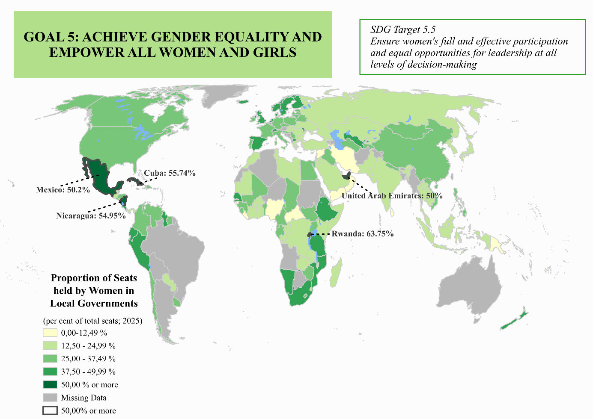
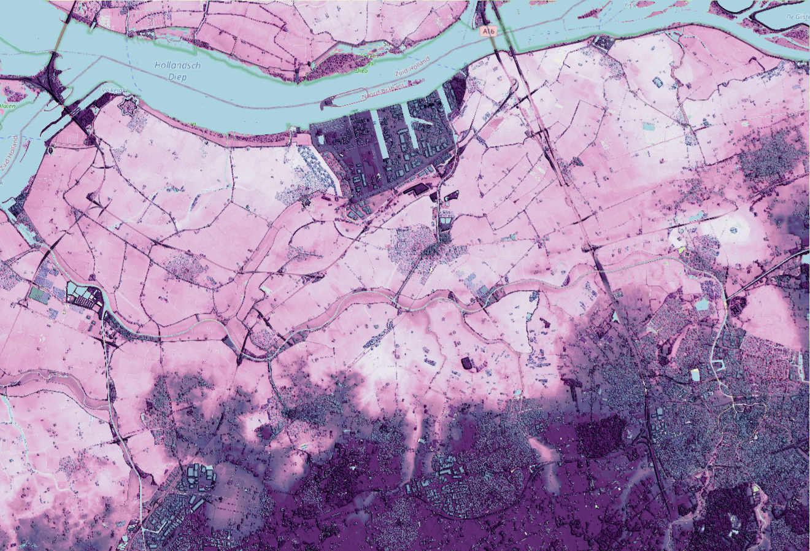
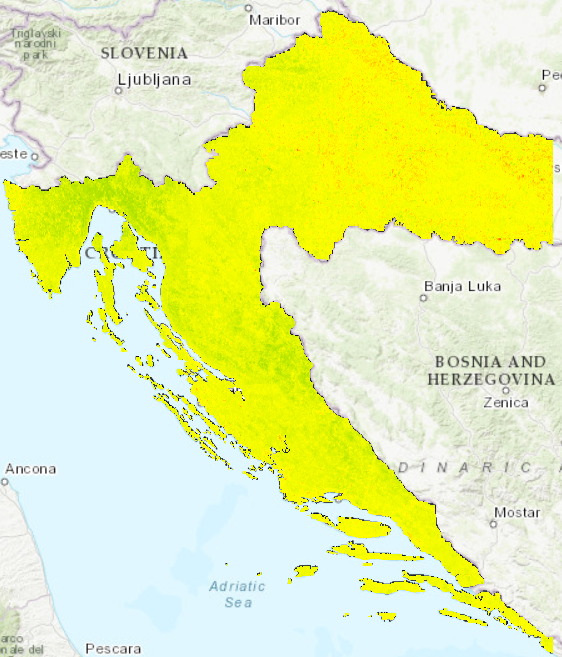
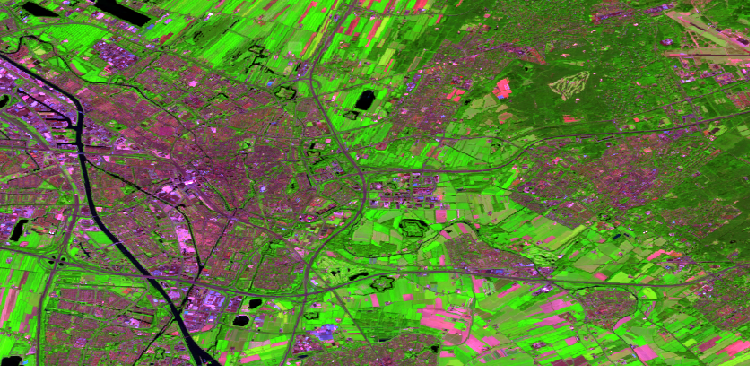
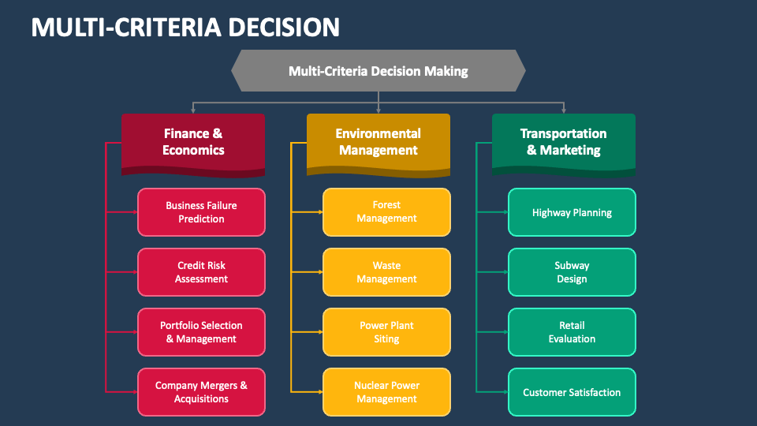

Map Portfolio

Choropleth Maps of the World
Stationary and interactive world maps made with the help of QGIS and Leaflet. The maps display the UN sustainanable development goals (SDGs) by mapping their targets and indicator data for individual countries. The data was obtained from the official UN websites.

Analysis of Spatial Data in Utrecht
QGIS was used to obtain and present spatial data for Utrecht. An isochrone map was created to present the number of historical sites within a walking distance of a hospital. Additionally, VGI data was collected around the city, and processed using QGIS, although with limited success.

DEM of Western Northern Brabant
QGIS and ArcGIS Online were used to plot the digital elevation model (DEM) for the western part of the Northern Brabant region of the Netherlands. The result was compared to the map from 1730s to determine whether the river corridor had changed over time.

NDVI Maps of Croatia
QGIS and ArcGIS Online were used to process Sentinel 2 data from Google Earth Engine. A map was created to display the NDVI for the Medimurje region, as well as entire Croatia, in 2020 and 2025, along with the NDVI change in that time period.

Land Cover Classification via ML
ArcGIS Pro was used to determine the land cover classification (LCC) in Utrecht. The process was firstly done visually, and was then repeated using supervised and unsupervised machine learning to obtain different results.

Multicriteria Analysis
Analysis and discussion of multicriteria analysis and its applications for research purposes, as well as the applications for societal development. Exposition of the concept, as well its future potential. Includes a hypothetical workflow scheme.